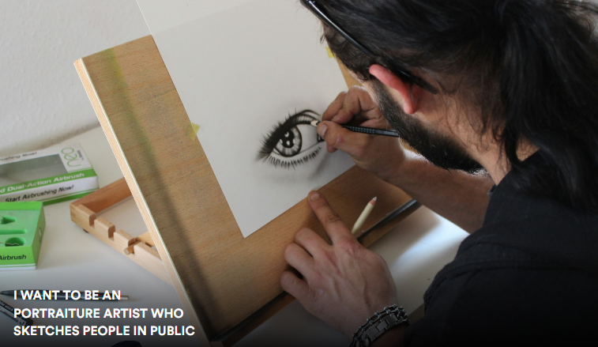

My Art Projects
My Story As An Artist
How I Got Started
I started drawing later in my life.
Why I Draw
Art is a way for me to express myself and my creativity. I enjoy creating art using various mediums and tools.
I have created a variety of drawings, paintings, and photographs. I find inspiration in people, buildings, and everyday life. I hope you enjoy viewing my art projects!
My Vision
My dream is to become a professional artist and have my own art studio. I want to create art that inspires others and brings joy to their lives.
What I'm Learning About Now
Long-Term Stuff
I am currently a student enrolled in the Compass Atelier's MAP art program!
Short-Term Stuff
Here are some of the things I'm learning about right now:
- Using White & Black Conte to Draw on Greyscale Paper
- Creating a Series of Charcoal Drawings Inspired by the Human Figure
- Creating a Series of Watercolor Paintings Inspired by Nature
Favorite Art Mediums
Here are some of my favorite art mediums:
- Charcoal
- Watercolor
- Pen and Ink
- Acrylic Paint
- Photography
Art Gallery
Here are some of the things I created. Click on an image to view more details!
Hazy Memories of Her
$25
I created this picture for a friend I lost.
Doodle of Ari
$25
I created this picture because I like drawing in charcoal.
Color Study
$25
I created this picture because I like drawing ____.
David Bust
$25
I created this picture because I like drawing ____.
Boat on a Upset Sea
$25
I created this picture because I like drawing ____.
Inverse Value Exercise
$25
I created this picture because I like drawing ____.
Self-Portrait
$25
I created this picture because I like drawing ____.
Watercolor Exercise
$25
I created this picture because I like drawing ____.
What's Next?
I am also planning to create a series of digital illustrations inspired by fantasy and science fiction.
I am always working on new projects and learning new drawing and painting techniques. Here are some things I am currently working on:
- Creating a series of oil paintings inspired by the human figure.
- Learning how to draw digitally using an iPad
- Creating 2D animations using FlipaClip
Like What You Saw Here? Let's Talk!
Feel free to contact me if you'd like to purchase one of my art pieces!
Send me a message!